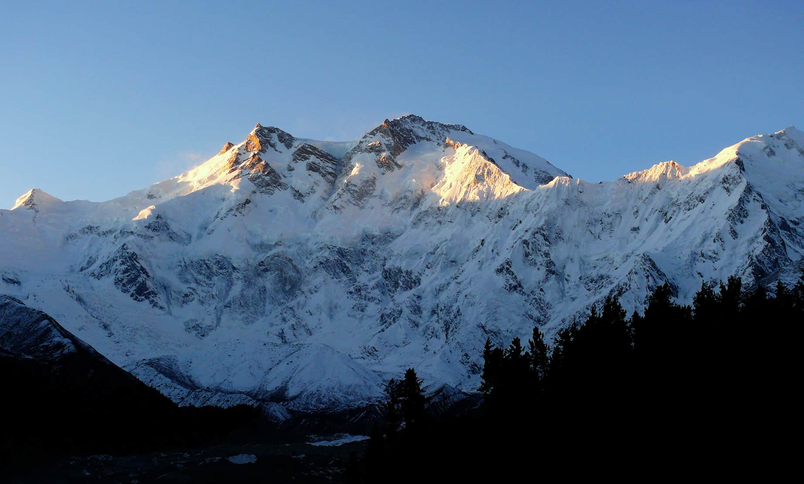
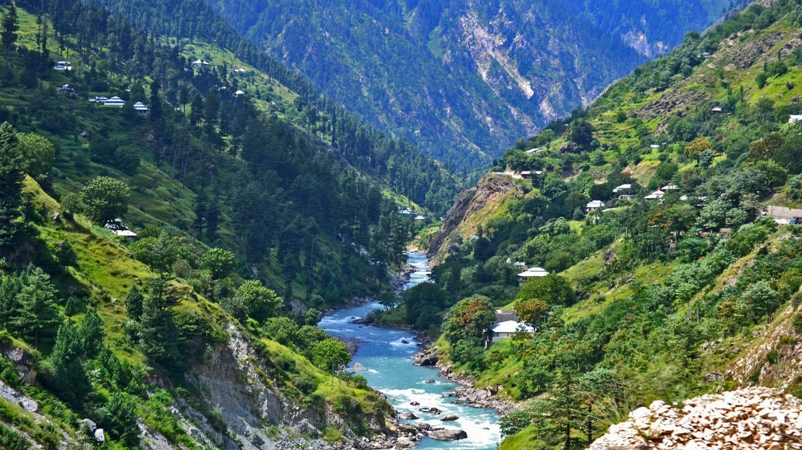
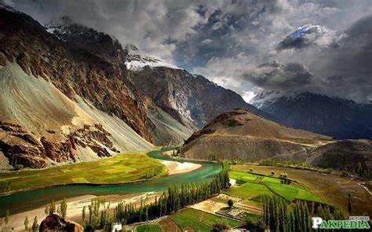

DESTINATIONS

Hunza Valley
Highlights
- Karimabad
- Altit & Baltit Forts
- Attabad Lake
- Passu Cones
Best For:
- Scenic Views
- Cultural Experiences
- Adventure Tourism
“Every turn in Hunza is a story waiting to be discovered.”
.jpg)
Skardu (Gilgit-Baltistan)
Highlights
- Shigar Fort
- Shangrila Resort
- Satpara Lake
- Deosai Plains
- Sheosar Lake
Best For:
- Trekking
- Photography
- Camping
- Exploring the Karakoram Range
"In Skardu, the mountains don't just touch the sky — they touch your soul."

Fairy Meadows & Nanga Parbat Base Camp
Highlights
- View of Nanga Parbat (the 9th highest mountain)
- camping under the stars
Best For:
- Adventure seekers
- Hikers
"At Fairy Meadows, the earth whispers in silence, and Nanga Parbat stands like a giant guarding the dreams of wanderers."
.jpg)
Swat Valley (Khyber Pakhtunkhwa)
Highlights
- Malam Jabba (ski resort)
- Kalam
- Mahodand Lake
- Fizagat
Best For:
- Family trips
- Natural Beauty
- Winter Sports
"Swat — where rivers sing, mountains breathe, and every breeze tells a tale of timeless beauty."

Naran & Kaghan Valleys (Khyber Pakhtunkhwa)
Highlights
- Saif-ul-Malook Lake
- Babusar Top
- Lulusar Lake
Best For:
- Nature lovers
- Off-Road Travelers
- Summer Tourism
"In Naran and Kaghan, nature paints with colors the eyes can’t forget and peace the heart never leaves behind."
.jpg)
Astore Valley (Gilgit-Baltistan)
Highlights
- Rama Meadows
- Rama Lake
- Rupal Valley
Best For:
- Quiet Getaways
- High-Altitude Trekking
"Astore is where silence speaks through mountains, and every path leads to a forgotten piece of paradise."
.jpg)
Gojal Valley (Upper Hunza)
Highlights
- Khunjerab Pass (China border)
- Sost
- Borith Lake
Best For:
- Road trips via the Karakoram Highway
"Gojal is where the land meets the clouds, and every silence echoes with the wisdom of the mountains."
.jpg)
Chitral & Kalash Valleys (Khyber Pakhtunkhwa)
Highlights
- Kalash Culture
- Bumburet Valley
- Tirich Mir (highest peak in the Hindu Kush)
Best For:
- Cultural tourism and mountain vistas
"In Chitral and Kalash, time slows down, traditions dance in colors, and every mountain holds a tale older than memory."

Gilgit
Highlights
- Gilgit River
- Rakaposhi Viewpoint
- local Bazaars
Best For:
- Central base for northern expeditions
"Gilgit isn't just a city — it's the heartbeat of the mountains, where every road begins with wonder and ends in awe."